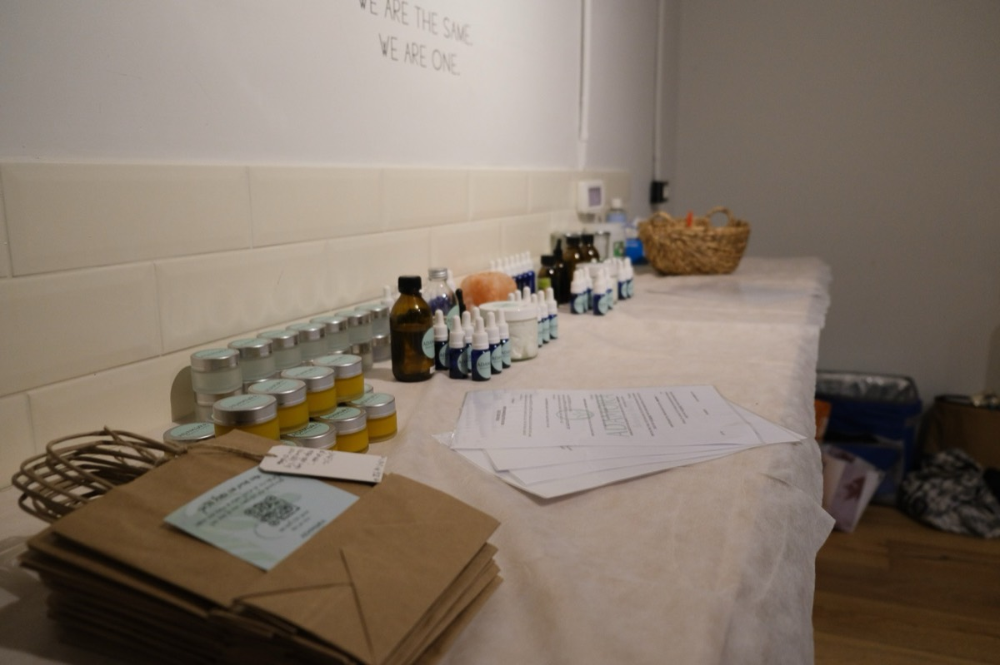

מבט הוליסטי על אקנה
העור הוא הרבה יותר מסתם מעטפת חיצונית. על הקשר בין אקנה, הורמונים ורגשות — ומה אפשר לעשות.
לקריאה ←על נטורופתיה, ארומתרפיה, רפלקסולוגיה ופרחי באך — מהקליניקה ומהלימודים.

העור הוא הרבה יותר מסתם מעטפת חיצונית. על הקשר בין אקנה, הורמונים ורגשות — ומה אפשר לעשות.
לקריאה ←רפלקסולוגיה: איך נקודות בכף הרגל מחוברות לכל הגוף, ומה קורה בטיפול.
לקריאה ←תמציות פרחים לתמיכה רגשית — מה הן, למי, ואיך משתמשים.
לקריאה ←שמנים אתריים שיכולים לעזור לריכוז ולרוגע — לילדים ולמבוגרים.
לקריאה ←